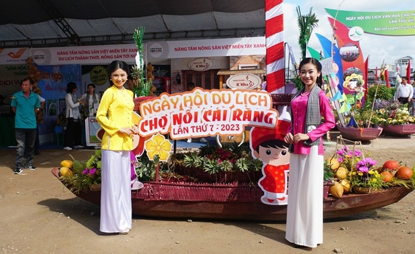

Ngày hội làm sống dậy đầy đủ tinh thần của chợ nổi: ghe thuyền, âm thanh rộn ràng, món ăn sáng trên sông và niềm tự hào về một nếp sống thương hồ đã đi vào ký ức vùng đồng bằng.
Nếu Chợ nổi Cái Răng trong ngày thường là nhịp buôn bán chân thực, thì khi vào ngày hội, không gian ấy trở nên rực rỡ và giàu tính trình diễn hơn nhưng vẫn giữ được hồn sông nước. Đây là dịp để du khách nhìn thấy bản sắc thương hồ được kể lại bằng âm thanh, màu sắc và sinh hoạt cộng đồng.
Lễ hội hấp dẫn bởi cảm giác vừa truyền thống vừa vui tươi. Không khí trên sông khiến mọi thứ trở nên linh động: thuyền di chuyển, tiếng máy nổ hòa cùng tiếng gọi hàng, mùi cà phê kho và món nóng lan ra trong làn gió sớm rất đặc trưng của Cần Thơ.

Mọi hoạt động diễn ra trên mặt nước tạo nên trải nghiệm rất khác so với lễ hội trên bờ.
Du khách cảm được lối sống mua bán, giao tiếp và ứng xử của cư dân chợ nổi.
Món ăn trên ghe làm nên cảm giác vừa bình dị vừa đáng nhớ của ngày hội.
Đây là một trong những lễ hội hiếm hoi mà bản sắc hiện ra bằng cả chuyển động. Bạn không chỉ nhìn lễ hội, mà gần như đang trôi cùng nó trên mặt nước.
Những dấu hiệu nhận diện truyền thống của chợ nổi trở thành hình ảnh văn hóa rất mạnh trong ngày hội.
Tiếng ghe, tiếng người, tiếng sinh hoạt trên sông tạo nên bầu không khí có một không hai.
Màu ghe, mặt nước và ánh bình minh giúp mỗi khung hình đều rất sống động.
Đi thật sớm là chìa khóa để cảm nhận trọn vẹn lễ hội và cũng là lúc đẹp nhất để chụp ảnh.
Khung giờ đầu ngày giúp bạn nhập cuộc đúng lúc sông nước nhộn nhịp nhất.
Hãy quan sát tổng thể mặt sông để cảm nhận rõ độ đông vui và màu sắc lễ hội.
Đây là đoạn trải nghiệm vừa ngon vừa rất có chất riêng của Cần Thơ.
Một điểm nối bên bờ sẽ làm chuyến đi cân bằng hơn sau không khí lễ hội sôi động.
Nếu bạn thấy website hữu ích, hãy ủng hộ một ly cà phê để nhóm có thêm động lực phát triển.
 Quét mã QR hoặc nhấn vào ảnh để ủng hộ.
Quét mã QR hoặc nhấn vào ảnh để ủng hộ.
Đánh giá từ du khách
Hãy chia sẻ cảm nhận của bạn về lễ hội và vẻ đẹp sông nước Cái Răng nhé.